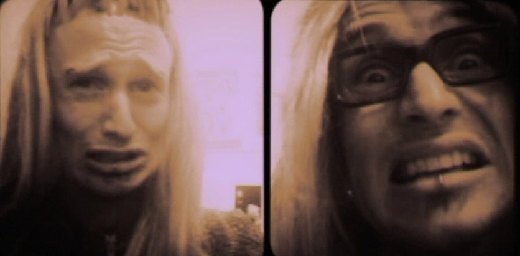
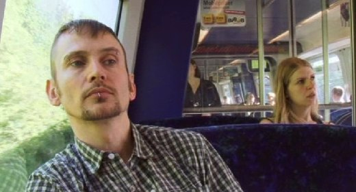
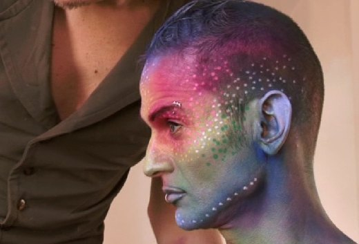

Anmeldelse af dokumentar filmen Dennis En Færøsk Princesse.
|
Dokumentar: - Dennis Agerblad.dk |

Sæð higani frá mínum sjónarhorni, her sum eg siti sum kundi hjá Kringvarpinum, so kundu sendingin um "Victoriu Wild" og "Dennis Agerblad" ikki verið gjørdar av somu fólkum og sama stovni. Meðan sendingin um "Victoriu Wild" var kanska meira ein eyðmýking, so var sendingin um "Dennis Agerblad" ein upplyfting! Dokumentarurin er ikki so gamal í Føroyum. Hetta er nakað nýtt hjá Kringvarpinum, um vit bólka hesar sendingar í tann bólkin. Eg veit ikki um vit skulu gera tað, eins og vit heldur ikki gera tað við m.a. sendingar hjá Zakarisi Hammer um seyðahald og bjargaferðir og fleyggj, sum heldur eru mentanarsendingar. Mær untist ikki at síggja sendingina um Dennis Agerblad, tá ið hon var fyrstu ferð send hóskvøldið, men so nú á Netvarpinum havi eg sæð hana. Sendingin sum vit meira kunna bólka inn undir dokumentarin, er einastandandi. So stutt fái eg sagt tað. Framúr sending, og orsøkin er tann, at persónurin sum sendingin er um, er einastandandi og fantastiskur. Hví? Jú, tí hann er í fullkomnum javnvági við seg sjálvan, sítt lív, og so tað besta av øllum - við sína mammu! Hetta var tað mest fantastiska í sendingini um Dennis Agerblad, at mamma hansara var við! Persónurin Dennis Agerblad er ein fullfíggjaður pakki, sum bæði hann og øll onnur fáa latið upp, og fáa gleði av! |

Tó at Dennis ikki hevur kent seg so væl í Føroyum, tí hann hevur verið happaður fyri sín persón og eginleikar, so tori eg at leggja øll høvd á blokkin og siga, at tað eru fáir synir sum vísa slíka respekt og slíkan kærleika til sína mammu sum Dennis! Og eisini eigur mamman at fáa tey orð, at tað var gott at síggja, at hon elskaði sín son yvir alt. Dennis tók mammuna við inn í sítt lív 100%. Og mamman - uttan at vit sóu so nógv tað síðuna, tekur sonin við sær og saman við sær! Hetta er eisini eitt sereyðkenni fyri persónar sum Dennis Agerblad - teir hava virðing fyri sínum medmenniskjum, fyri sínum foreldrum og nærmastu - smílandi, positivir, glaðir altíð! Meðan tey menniskju sum hava happað hann, tí tey hava tikið patent uppá menniskjað, kanska ikki hava hesa respekt og eiga henda kærleika og smíl. Sendingin um Dennis Agerblad er um ein heilan persón! Og eg trúgvi, at tað er tað góða lívið! Tá ið tú hevur funnið teg sjálvan og tína leið og ert í harmoni við alt - sjálvt undirgrundina! Er nakað størri? Nei, tað er tað ikki! Eg fari ikki at taka nakað frá sendingini um Dennis Agerblad, einaferð Ove og aftur einaferð Robin Ova Tolfsen, føddur 10. apríl 1970 í Vestmanna, og giftur 26. septembur í 2009 við Daniel, við at skriva fleiri orð, men heita á øll sum ikki sóu sendingina, um at fara inn á heimasíðuna hjá Kringvarpinum við at trýsta her! Døm ikki Dennis Agerblad, áðrenn tú hevur funnið og dømt teg sjálvan! ólavur |

http://new.vagaportal.fo/pages/posts/dokumentar---dennis-agerblad.dk-7092.php